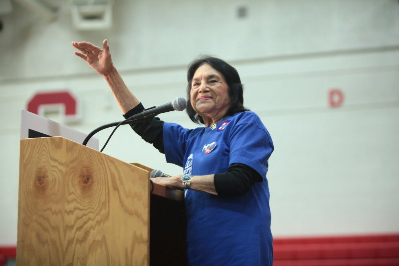

![NTK]()

Huerta Spent Her Last Year Dismantling the Saint She Helped Build
Dolores Huerta died at home in Bakersfield, California, on Wednesday, her family said, after a career that put toilets, drinking water and health plans in the fields of the Central Valley (Reuters). The contracts she negotiated won farmworkers job security, retirement plans, guaranteed rest periods and protection from pesticides. She was arrested more than 20 times, and a San Francisco police baton broke her ribs and damaged her spleen at a 1988 protest (Reuters).
For most of that time, Cesar Chavez got the credit. Huerta told PBS in 2012 that he had asked whether she minded him being the spokesperson, and that she said yes of course. In March, she told the New York Times what that arrangement had cost her. She said Chavez pressured her into sex once and forced her a second time, and both encounters ended in pregnancies. She arranged for other families to raise the children (The Washington Post).
Her explanation for the silence was a ledger, not an excuse. She feared that speaking would unravel the progress workers had made, and she said it was worth it because it was her cross to bear (CBS News).
The Movement She Protected Moved Fast Once She Stopped
The reckoning she started did not wait for her death. Municipalities across the country began renaming buildings and streets for Huerta and taking down the Chavez name (FOX 5 DC). A man who spent decades as a near-secular saint to the American left lost his place on the map within months of one interview.
Her own side was not unanimous about how she handled it. Some wished she had spoken earlier, at least inside the union, to protect other victims (Los Angeles Times). Her defenders answered that the late disclosure reflected badly only on Chavez. Both positions sat in the same obituary, and neither could be waved off.
The record also complicates the simple version of the story. The union's decline had causes beyond one man's crimes. Huerta usually backed Chavez as he demanded absolute power, and the loyalty tests and imagined conspiracies ended in purges of some of the UFW's most dynamic leaders while field hands kept working in abysmal conditions (Los Angeles Times). Huerta had been inside that machinery too.
The second time I was forced, against my will, and in an environment where I felt trapped.
Dolores Huerta, in a statement to the New York TimesWhat Outlasts Her Is the Part Chavez Never Owned
The slogan outlived the arguments about who deserved it. "Sí, se puede" came from Huerta, who fired it back at a Latino community leader in Arizona who said a 1972 recall campaign against the governor couldn't be done. Barack Obama carried it into the 2008 campaign as "Yes we can," and told her in 2012, while handing her the Presidential Medal of Freedom, that he had stolen it (The Washington Post).
She kept working through the end. She spoke against President Trump's immigration policies on college campuses into her 90s, and in election years she crossed the country registering voters (Reuters). Her foundation, which she started in 2002, still organizes communities in Bakersfield and beyond, and California Sen. Maria Elena Durazo said Huerta was dancing at a fundraiser a few months ago (FOX 5 DC).
The family has asked for privacy and said it will announce plans to honor her. The street signs are already ahead of them.
What happens to the name, the money, and the union once the witness is gone.
The Renaming Will Move From Street Signs to Budgets, and Some Cities Will Stall
The signs came first because they are cheap. The next fights involve bigger line items: schools, parks, libraries and holidays still carrying the Chavez name, each needing a vote, a budget and a ceremony. Cities that moved within days of her disclosure (FOX 5 DC) will almost certainly fold Huerta's death into the same agenda items, because a memorial vote is easier to schedule than an apology. The most likely outcome is that Huerta's name goes up faster than Chavez's comes down, and the gap becomes its own story. Boards that only add her name avoid the harder question of what to do with the old one. The ones that do both will have to explain why a decision made in March needed a funeral to finish.
The UFW Will Be Pressed to Say What It Knew, and Her Death Removes Its Easiest Answer
The union posted a tribute crediting Huerta with its motto (BBC). Reporters and members will now ask what the organization itself did with the accusations against its founder, and whether it will open its records. Her death does not close that question. It removes the one living person who could say, in her own voice, what the union's leadership knew and when. The likeliest response is a statement and an internal review, announced fast and scoped narrowly. The harder demand will come from local chapters and from the other women, who hold accounts that were never Huerta's to tell, and a review run by the union about the union will not satisfy them for long.
Her Foundation Inherits the Brand, and the Memorial Will Decide Whether It Inherits the Argument
The family has promised plans to celebrate her life (FOX 5 DC). Whatever form it takes, someone will have to decide what gets said from the podium about Chavez, and every possibility has a cost. Silence will read as the old bargain she spent a lifetime keeping. A full accounting risks turning her funeral into the trial she never asked for. Politicians who clamored to stand beside her, and who will clamor again for a seat at the service, face the same choice in miniature.
Her protégés say the legacy lives in the people she trained (FOX 5 DC). The test is whether those organizers keep her methods without the habit she modeled at her worst, which was protecting the cause at the expense of the people inside it. The first memorials, within days, will show which version the movement has chosen to carry.
Three doors the week opened, and what stands behind each one.
A Movement Built on Her Slogan Could Now Borrow Her Method for Audits
The first door is already ajar. Huerta's last public act was to name what her movement had protected for sixty years, and she did it in her own voice, in her own timing, to a newspaper. The Times interviewed more than a dozen women who said they were pressured into sex or assaulted by men in the labor union (The Washington Post). Her foundation is a functioning organization with a voter-registration operation and a network of organizers. What just became combinable is a memorial moment and an unfinished accounting. A foundation that has to decide what to say about Chavez at her funeral can also decide to fund independent review of how unions and advocacy groups handle abuse claims, with outside investigators and findings the public can read. No institution in the Latino labor world has done that yet. The funeral gives one a reason to start.
Her Deathbed Timing Gives Politicians a Cheap Way Out, and Voters a Way to Notice
The second door opens onto a worse room. Politicians who stood beside her at marches will want to stand at her service, and a tribute costs nothing. Ro Khanna and the Congressional Hispanic Caucus posted theirs within hours (The New Republic). The combination now available is a campaign season and a saint with a shorter paper trail: candidates can claim Huerta's mantle in speeches without saying a word about the union that failed other women. That would repeat the old bargain at a larger scale. But the same combination cuts the other way. The reporting is public, the dates are on the record, and any candidate who invokes her while skipping the harder half of her story hands an opponent an easy contrast.
If the Foundation Opens Its Records, the Other Women Get a Place to Go
This door depends on the first. Suppose the foundation commissions an outside review, even a narrow one. The women in the Times investigation, who hold accounts that were never Huerta's to tell, would have a venue other than a newspaper. The CBS and NBC obituaries both note that she kept her secret to protect workers' gains (CBS News). A review would test whether that protection was ever necessary, because the union survived the revelation of its founder's crimes with its contracts intact. Chapters weighing whether to cooperate would then watch whether the foundation's findings name individuals or only describe patterns. That choice would set the template for every other movement still sitting on a founder's secret.
Three stories are circulating about her death, and each one needs someone to believe it.
The Claim That Huerta's Silence Proves the Allegations Were Convenient, Not True
Within hours of her death, posts began arguing that a woman who kept quiet for 60 years and spoke only at the end of her life must have been pressured, coached or used. The version circulating on social media says the New York Times found a dying icon and a dead man who could not answer. The people pushing it are mostly defenders of Chavez's legacy, along with accounts that profit from distrusting the Times in general.
The appeal is easy to see. Chavez was a secular saint to many families, and grief reaches for a villain it can name. A story in which the accuser was manipulated lets a believer keep the saint and blame the paper.
The record does not support it. Huerta put her account in writing before the article ran. She gave the Times a statement describing both encounters in her own words, and it appeared in the same story as accounts from other women (The Washington Post). She also gave a later interview to Latino USA and defended her silence as her own choice, calling it a cross she bore (CBS News). Chavez's own family called itself devastated and praised the women for coming forward (BBC). The people closest to the accused did not call it a smear.
Who gains from the claim? Anyone with a brand attached to the old Chavez image, and anyone whose business is persuading audiences that every institution lies. A woman who decided when to speak is recast as a prop. That erases the one choice she controlled.
The move has a long history. The 1950s Hollywood blacklist ran on the same engine: discredit the witness, and the testimony needs no answer.
The claim also fails on its own terms. Delayed disclosure is the ordinary pattern when the person who did the harm ran the movement the victim had built her life around. Huerta told the Times he was her boss and the leader of the cause she had already given years to (The Washington Post). Her silence has a mechanism, and she stated it herself.
That leaves the believers with a harder question. If the paper did not invent the story and the family did not dispute it, what does the theory protect?